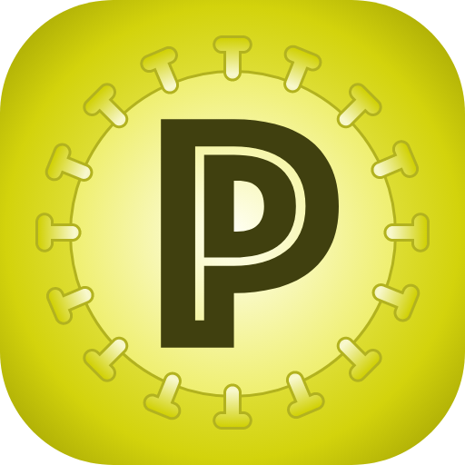

Frontend Template Documentation
This project is a comprehensive frontend template for developers, providing a responsive and modern user interface for building various web applications. The design philosophy focuses on a clean, intuitive interface to help you kickstart your projects quickly. Designed by AdminUIUX.
This template is built with Angular Material Design, a component library that provides a set of UI components based on Google's Material Design. Angular Material ensures a consistent and high-quality user experience across all devices.
To get started with the project, follow these simple steps using npm:
npm install to
install all necessary dependencies.
npm start or ng serve to run a local
development server. The application will be available at
http://localhost:4200/.
npm run build or
ng build. The output files will be in the
dist/ directory.
The project supports a variety of themes that can be applied by
adding a class to the <body> tag. The default
theme is theme-azure.
theme-redtheme-greentheme-bluetheme-yellowtheme-cyantheme-magentatheme-orangetheme-chartreusetheme-spring-greentheme-azuretheme-violettheme-rose
We have created separate file for new color scheme
_custom-theme.scss and added into
template-style.scss. So if you wanted to change color
scheme you can do it in _custom-theme.scss file with
light-dark(#color-in-light-mode, #color-in-dark-mode).
This template leverages several powerful third-party libraries for added functionality:
The assets used in this project are sourced from the following places: